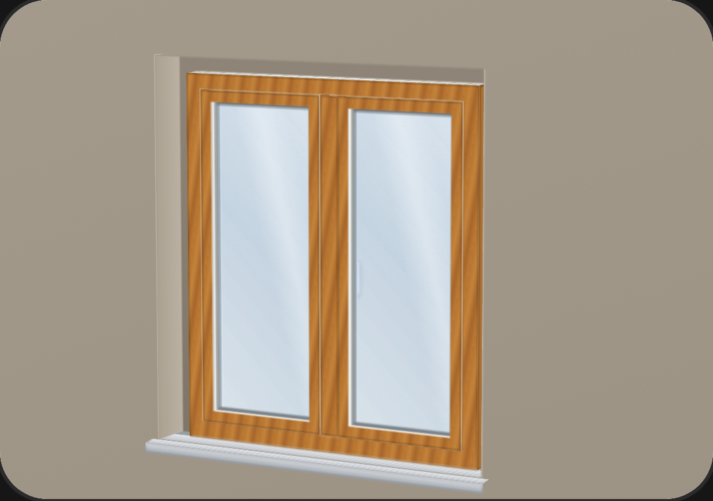
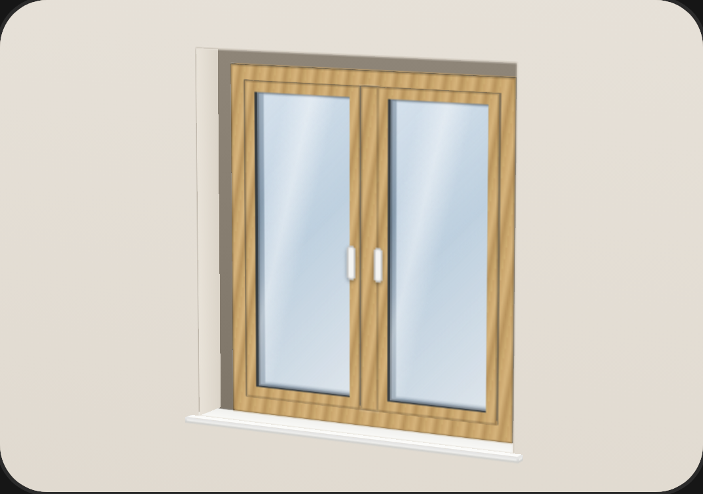
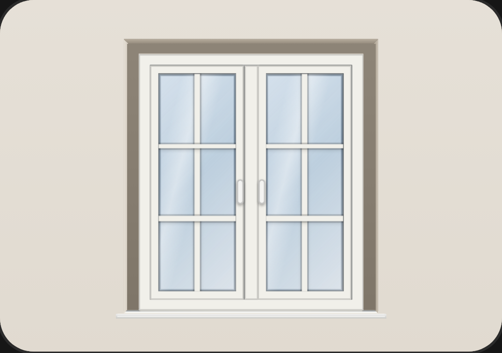
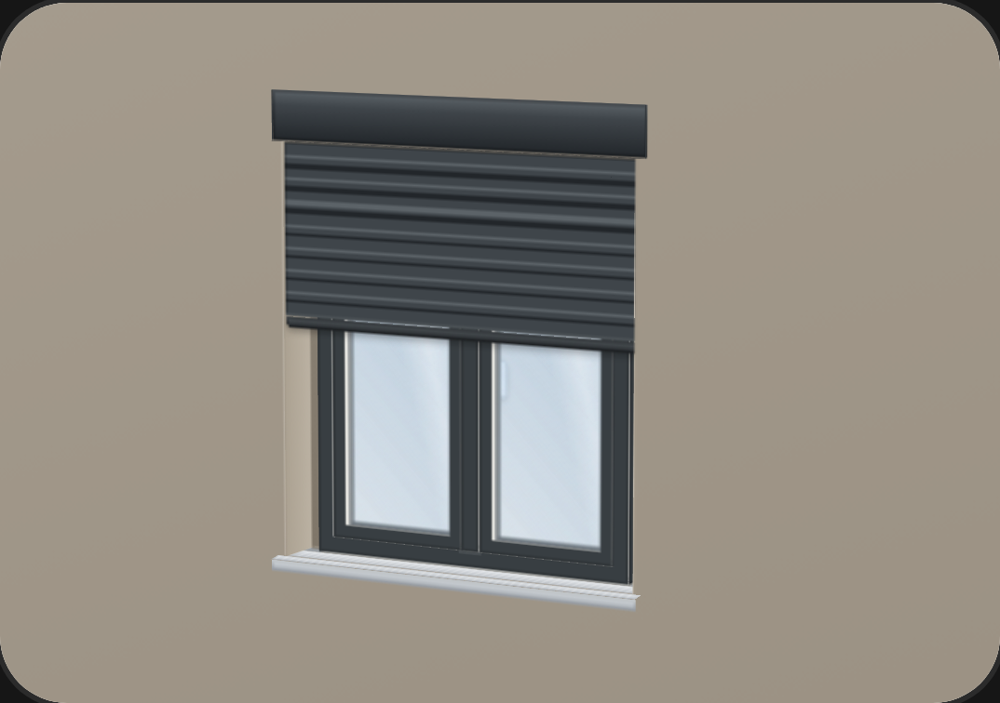
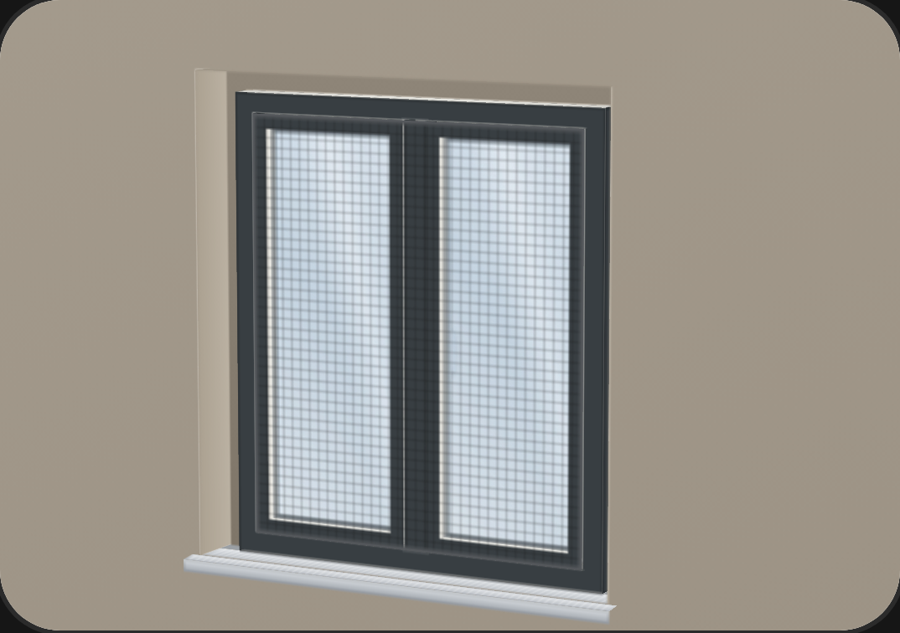
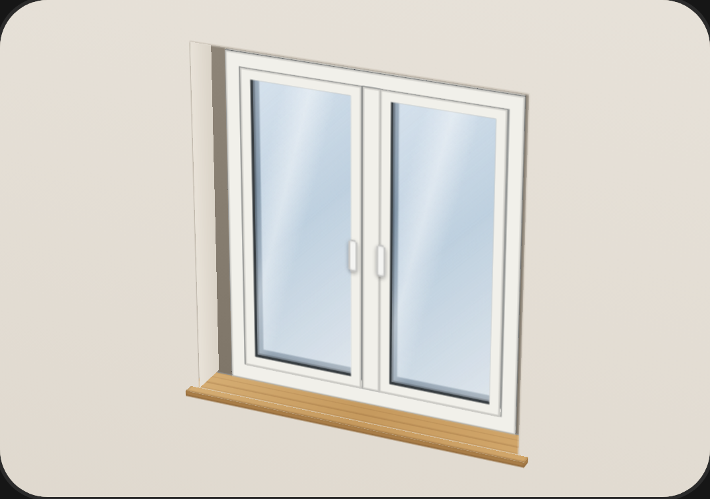

Ausstattung
Bis zur
Fensterbank.
Material, Farbe innen und außen, Glas,
Rollladen, Insektenschutz.
Unsicher? Dann beraten Sie.
- RAL, Holzdekore, Wunschfarbe
- Weiß ich noch nicht
- Griff und Einbruchschutz
- Antrieb bis Smart Home





